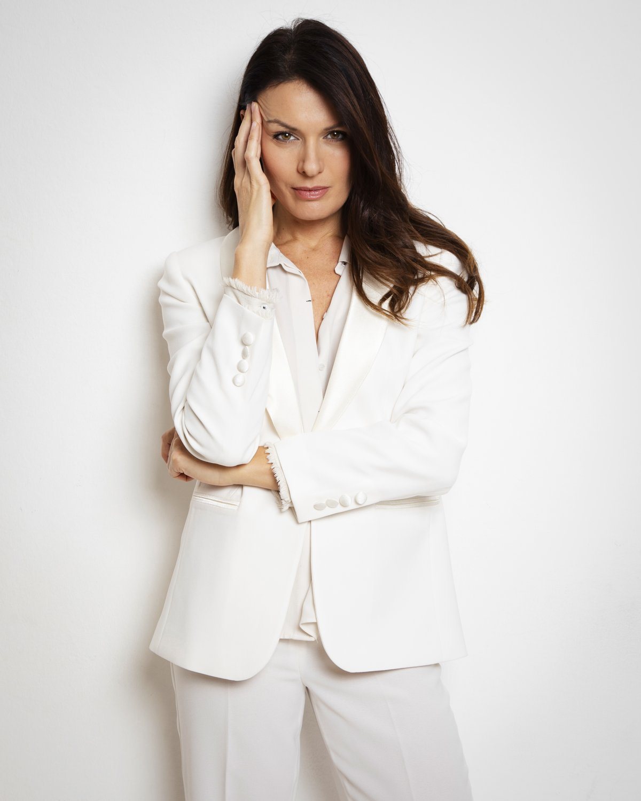

Quando l'attore diventa un algoritmo
Sono un ragazzo — si fa per dire, ormai — degli anni Settanta. Sono cresciuto con il Carosello, con quella frase che era quasi un rito di casa, "dopo Carosello a letto", e mi ricordo ancora, in diretta, l'ultimo Carosello di sempre: era il 1977 e c'era Raffaella Carrà. Da allora l'ho rivisto decine di volte nelle riproposte di Rai Teche, ma niente è come averlo visto quella sera, senza sapere che stavo assistendo alla fine di un'epoca.
Sono nato nel 1967, e il rimpianto per me non si ferma alla pubblicità: è lo stesso con certi programmi televisivi di allora, con la scuola delle elementari e delle medie, con la musica che ascoltavo, con le persone che non ci sono più. Il Carosello è solo una delle tante porte da cui quel tempo torna a bussare.
Forse la più semplice da raccontare, ma non l'unica.
Negli anni Settanta andare a Monza con i miei genitori e con mia sorella per fare acquisti era una piccola avventura. A Renate la grande distribuzione non era ancora arrivata e i grandi magazzini del centro avevano qualcosa di speciale. Era la Standa? L'Upim? Non lo ricordo più con certezza. Ricordo bene invece le porte a vetro che si spalancavano sul salone d'ingresso e la musica in sottofondo — spesso diffusa tramite i primi sistemi di filodiffusione o cassette registrate per i negozi — giocava un ruolo fondamentale nel creare quell'atmosfera tipica dell'epoca. Per i grandi successi italiani c'erano "Pazza idea" di Patty Pravo, "Ancora tu" di Battisti, "Questo piccolo grande amore" di Baglioni, "Minuetto" di Mia Martini, "Tanti auguri" della Carrà, "Sei bellissima" della Bertè, "Bella da morire" degli Homo Sapiens, "Ti amo" di Umberto Tozzi. Per i successi internazionali, "Dancing Queen" degli ABBA, "Stayin' Alive" dei Bee Gees, "Y.M.C.A." dei Village People.
Possono apparire dettagli minimi, eppure bastano a riportarmi indietro con una forza sorprendente. Ho sempre creduto nella musica come potente catalizzatore di ricordi. Quando ci penso infatti, gli occhi mi si inumidiscono. Non è soltanto nostalgia del tempo passato; è il rimpianto di una semplicità perduta, di un rapporto più diretto tra le persone e il mondo che avevano intorno. Quelle canzoni, quei negozi, quelle immagini erano parte di una quotidianità forse modesta, ma straordinariamente viva.
Sono fatto così, lo so: vivo un po' di rimpianti. Ma forse è anche per questo che, guardando certi spot degli ultimi tempi, ho cominciato ad avere una sensazione curiosa. Alcuni sembrano pubblicità come le abbiamo sempre conosciute, ma qualcosa nei volti, nei movimenti, nelle luci suggerisce che dietro quelle immagini ci sia molto più computer che macchina da presa. Il Carosello era fatto di persone vere, in carne e ossa, che duravano il tempo di uno sketch e restavano comunque per sempre nella memoria di chi guardava. Oggi mi chiedo quanto ancora, di quella verità, sopravviva.
Non è un'impressione campata in aria. Nel 2026 sono stati pubblicati studi accademici su sistemi pensati proprio per generare in modo automatizzato video pubblicitari, ottimizzati addirittura sulla base delle performance commerciali delle campagne. Il che mi porta dritto a una domanda che vale la pena pormi senza allarmismo, ma con attenzione: stiamo assistendo a una nuova evoluzione degli effetti speciali, o all'inizio di una trasformazione più profonda del mestiere dell'interprete?
L'intelligenza artificiale è già negli spot
Bisogna intendersi: raramente si tratta di un attore interamente artificiale dall'inizio alla fine. Più spesso l'IA entra a pezzi: genera ambientazioni e scenografie, ritocca un volto, produce brevi sequenze video, modifica una voce, digitalizza l'aspetto di un interprete, e in alcuni casi crea personaggi interamente sintetici. Esiste poi una zona grigia — spot nei quali non è affatto chiaro quanto sia stato realizzato con l'IA — che è forse la più interessante da raccontare, perché è quella in cui il pubblico smette di accorgersi della differenza.
Non solo pubblicità: il cinema
Il discorso, in realtà, riguarda da vicino anche il grande schermo, e non da oggi. Il caso più noto resta probabilmente quello del giovane Harrison Ford digitalmente ricreato per recitare accanto alla sua versione ottantenne nell'ultimo capitolo di Indiana Jones: un lavoro di ricostruzione durato circa un anno, il cui esperimento più clamoroso riguarda proprio la creazione digitale di un Harrison Ford trentenne messo a recitare al fianco dell'Harrison Ford vero, oggi ottantenne. Non è un caso isolato: anche Keanu Reeves, tempo prima, aveva preteso clausole contrattuali specifiche a tutela del proprio volto e della propria immagine digitale.
Il tema è arrivato fino agli Oscar. Nella primavera del 2026 l'Academy ha introdotto nuove regole proprio contro gli "attori sintetici" e le sceneggiature scritte da un'IA: saranno presi in considerazione solo ruoli dimostrabilmente interpretati da esseri umani, e con il loro consenso. Una precisazione necessaria perché il problema non riguarda solo gli attori del tutto inventati, ma anche interpreti inseriti in un film a loro insaputa.
Non tutti, nel mondo del cinema, guardano all'IA come a una minaccia pura. Martin Scorsese è entrato quest'anno come socio e consulente di una startup tedesca specializzata in immagini e video generati dall'intelligenza artificiale, che userà per creare gli storyboard dei propri film, ricordando che il cinema è un mezzo giovane, di circa 125 anni, e va tenuto aperto a come può evolversi. È un promemoria utile: la tecnologia, da sola, non è né il nemico né l'alleato. Dipende da come e per cosa viene usata.
Sullo sfondo, restano le cicatrici dello sciopero SAG-AFTRA del 2023, il più lungo della storia recente di Hollywood, nato in buona parte proprio dal timore di essere "scansionati una volta e usati per sempre". Nel 2026 il tema si è riaperto: i contratti erano tutti in scadenza tra maggio e giugno, e a fine maggio sindacato e studios hanno trovato un'intesa che non vieta l'uso dell'intelligenza artificiale, ma stabilisce che qualsiasi replica digitale di un artista, vivente o deceduto, potrà essere realizzata solo con il suo consenso informato e un compenso adeguato, e che i personaggi sintetici andranno sottoposti preventivamente al vaglio del sindacato.
Il problema economico
Ai tempi del Carosello un'agenzia doveva convincere un attore, un regista, uno sceneggiatore, e aspettare che tutto fosse pronto per andare in onda: il tempo era parte del rito, non un costo da tagliare. Oggi la logica è diversa, ed è inutile fingere che non lo sia. Un'agenzia potrebbe ragionare così: perché convocare un attore, affittare una location, organizzare una troupe, girare per più giornate e poi fare post-produzione, quando parte del risultato si può ottenere con strumenti generativi? Questo non significa che l'attore sparirà, ma potrebbe cambiare radicalmente la quantità e la natura del lavoro disponibile; non solo per gli interpreti, ma per figuranti, fotografi, doppiatori, scenografi, truccatori, tecnici e troupe.
Di chi è quella faccia?
Qui si tocca, secondo me, il cuore della questione. Un attore non vende soltanto due ore di prestazione davanti alla macchina da presa: vende la propria identità visiva e vocale. Se un'azienda paga un interprete per uno spot, può poi usare quell'immagine per generare scene mai recitate? E quanto dovrebbe essere pagato per questo utilizzo: una volta sola, per ogni campagna, per ogni diffusione, per un periodo definito?
È un dibattito già concreto anche fuori da Hollywood: da noi, dal 2 agosto 2026 sono entrati in applicazione gli obblighi di trasparenza dell'AI Act europeo sui contenuti generati o manipolati dall'intelligenza artificiale, deepfake compresi. Ma la trasparenza verso il pubblico e la tutela economica dell'attore restano due problemi distinti: anche uno spot che dichiari correttamente di contenere materiale generato dall'IA lascia comunque aperta la domanda su chi possiede i diritti sulla replica digitale dell'interprete, e su come viene remunerata.
La voce di chi il mestiere lo vive ogni giorno

Immagine gentilmente concessa dall'intervistata.
Di questo tema ho voluto parlare direttamente con chi il mestiere di attrice lo vive ogni giorno: Gloria Anselmi, volto che si muove con naturalezza tra spot, cinema e teatro, portando sullo schermo una bellezza pulita, mai artificiosa. Con lei sono amico di penna da anni, e in questo tempo abbiamo discusso di tutto — era inevitabile parlare anche di questo.
«Da qualche tempo ci sono stati senza dubbio dei cambiamenti nella realizzazione degli spot con l'utilizzo dell'intelligenza artificiale», racconta, «e mi è capitato personalmente di lavorare con produzioni che ne facessero uso». Non si tira indietro nemmeno davanti alla domanda più diretta: le è capitato di cedere la propria immagine per una trasformazione digitale. Ma, aggiunge subito, non è una novità assoluta: «Anche prima l'attore poteva essere sostituito da immagini non umane o cartonate».
Resta però convinta che la tecnologia non possa replicare tutto: «Non credo che l'IA possa sostituire un attore quando è bravo e riesce a trasmettere, con l'espressione e lo sguardo, sentimenti e stati d'animo. Almeno io la penso così».
Il suo ultimo film, Photogame, racconta per altro una storia che sfiora proprio questi temi, anche se da un'angolazione diversa: il suo personaggio non si confronta direttamente con l'intelligenza artificiale — è piuttosto l'attore che interpreta suo marito a restare ossessionato da quel gioco. «Credo che la storia raccontata in Photogame potrebbe succedere anche nella vita reale», osserva.
Non solo attori
Se l'IA riduce la necessità di girare fisicamente uno spot o una scena, la conseguenza non riguarda solo chi sta davanti all'obiettivo. Riguarda fotografi, videomaker, truccatori, parrucchieri, scenografi, costumisti, comparse, doppiatori, tecnici, operatori, troupe. Il vero tema, allargando lo sguardo, è quello del lavoro creativo nell'intera filiera audiovisiva. Pubblicitaria e cinematografica insieme.
Il paradosso
Anche il Carosello, del resto, era un piccolo mondo artificiale: un salotto finto, un prodotto che appariva quasi per caso dopo due minuti di sketch, un patto implicito con lo spettatore che sapeva benissimo di stare guardando una finzione. La differenza è che quella finzione aveva sempre, dietro, un attore vero, con un nome e una faccia riconoscibili anche fuori da quello sketch. La pubblicità, in fondo, ha sempre costruito una realtà artificiale: il trucco cinematografico esiste da sempre, poi sono arrivate la fotografia ritoccata, Photoshop, la CGI, il motion capture, il face replacement. L'IA non inventa la manipolazione dell'immagine: la porta a un livello nuovo. Prima serviva una persona reale per costruire l'immagine artificiale. Oggi si può, almeno in parte, creare la persona artificiale senza partire da una persona reale. Ed è proprio lì che si sposta il confine.
Il problema della fiducia
Se guardo uno spot e vedo qualcuno dire "io uso questo prodotto", do per scontato che quella persona esista e abbia davvero pronunciato quelle parole. Ma se il volto è sintetico, o la voce lo è, o quella persona non è mai esistita, o esiste ma non ha mai detto nulla del genere? Non è più solo un problema di lavoro: è un problema di credibilità della pubblicità stessa. Un rischio già concreto, visto che l'uso non autorizzato di immagini reali per creare pubblicità false tramite deepfake sta minando la credibilità degli influencer, un annuncio falso alla volta.
La domanda finale
Non chiuderei con "l'IA sostituirà gli attori?": è una domanda troppo facile, e forse anche sbagliata. La chiuderei così: se domani potremo creare artificialmente qualunque volto, qualunque voce, qualunque interpretazione, quanto varrà ancora essere una persona reale davanti a una macchina da presa? Non credo che si possa tornare indietro, e in fondo non sarebbe nemmeno giusto volerlo: il tempo del Carosello è stato bellissimo perché era il suo tempo. Ma vale la pena chiedersi, oggi, cosa vogliamo salvare di quella verità, prima che diventi solo un ricordo, come "Pazza idea" che suona ancora, ogni tanto, in un angolo della mia memoria.
E forse, alla fine, la risposta più onesta resta quella di Gloria: «Non credo che l'IA possa sostituire un attore quando è bravo e riesce a trasmettere, con l'espressione e lo sguardo, sentimenti e stati d'animo. Almeno io la penso così».
Io, da spettatore di una volta, spero che abbia ragione.